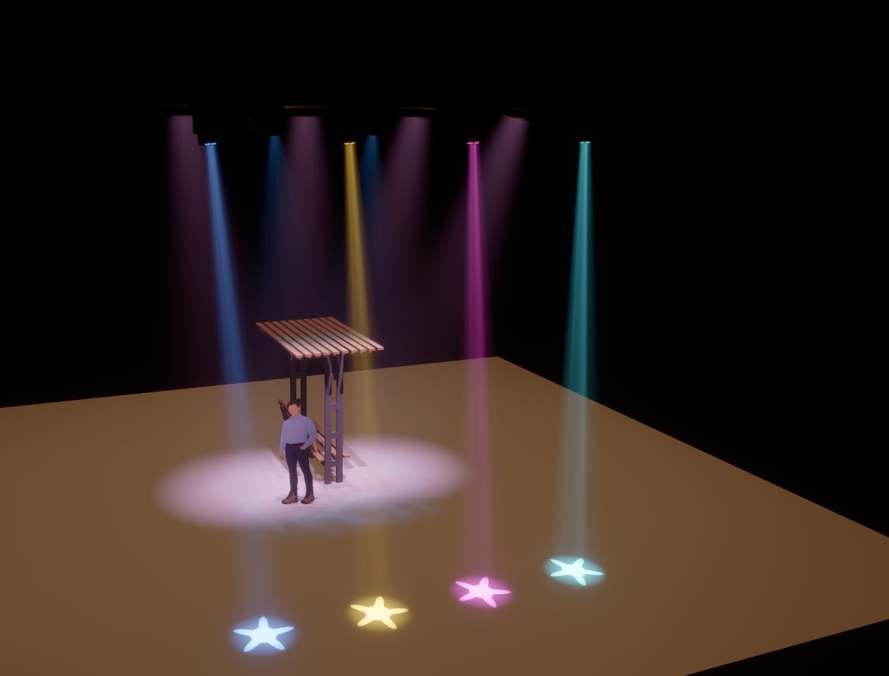

Tapetum
Licht sehen, bevor es leuchtet.
3D-Lichtvisualisierung für BlinderKitten: Lichtstrahlen im Haze, Farben, Gobos und Moving Heads – live, im Bühnenbild, das du in IngeTrazo gezeichnet hast. Frei und quelloffen, für macOS, Windows und Linux.
3D lighting visualizer for BlinderKitten: beams in haze, colours, gobos and moving heads – live, on the set you drew in IngeTrazo. Free and open source, for macOS, Windows and Linux.

Gerendert in Tapetum, Qualität „Hoch“. Bank: IngeTrazo-Modell von Marco Sumari Tellez (CC BY 4.0).
Gemacht für BlinderKitten und IngeTrazo
Kein Export, kein Abgleich von Hand, keine zweite Patchliste: Tapetum liest die Dateien, mit denen du ohnehin arbeitest, und folgt jeder Änderung.
No export, no syncing by hand, no second patch list: Tapetum reads the files you work with anyway and follows every change.
BlinderKitten
- Show-Datei direkt: Fixtures, Typen, Kanäle, Patch, Positionen, Gruppen und Cuelists aus der
.olga– neu geladen, sobald BK speichert. - Ein Klick fürs Art-Net: Tapetum legt in BK Spiegel-Interfaces mit Pass-through an. Patch und Hardware bleiben, wie sie sind.
- Live über die Remote Control: neue Gruppen erscheinen sofort, die aktuelle Cue der Main-Cuelist wird verfolgt.
- Zurück nach BK: verschobene und gedrehte Lampen, Pan/Tilt/Zoom-Bereiche („Physical range“).
- Auswahl wie in BK: Klick wählt ein Gerät, Rechtsklick seine BK-Gruppe.
- Show file directly: fixtures, types, channels, patch, positions, groups and cuelists from the
.olga– reloaded as soon as BK saves. - One click for Art-Net: Tapetum adds mirror interfaces with pass-through in BK. Patch and hardware stay as they are.
- Live via Remote Control: new groups appear at once, the current cue of the main cuelist is followed.
- Back to BK: moved and turned fixtures, pan/tilt/zoom ranges (“Physical range”).
- Selection as in BK: a click selects a fixture, a right click its BK group.
IngeTrazo
.igzdirekt lesen: jede Gruppe und Komponente wird ein eigenes Objekt, Materialien und Texturen kommen mit.- Speichern in IngeTrazo genügt: das Bühnenbild lädt sich selbst neu. Tapetum ändert die Datei nie.
- Vorderansicht = Zuschauersicht: beide schauen entlang +Y; Personen und Bäume (Face-me) drehen sich zur Kamera.
- Material überschreibbar: Farbe, Reflexionsgrad, opak oder transluzent – Gaze, Glas, Operafolie mit Schattenspiel.
- Umbauten als Szenen, gekoppelt an Cues der Main-Cuelist, mit weichem Übergang.
- Reads
.igzdirectly: every group and component becomes an object of its own, materials and textures come along. - Saving in IngeTrazo is enough: the set reloads by itself. Tapetum never changes the file.
- Front view = audience view: both look along +Y; people and trees (face-me) turn to the camera.
- Materials can be overridden: colour, reflectance, opaque or translucent – gauze, glass, opera foil with shadow play.
- Set changes as scenes, bound to cues of the main cuelist, with smooth transitions.
In fünf Minuten startklar
- Tapetum installieren und starten, die BlinderKitten-Show (
.olga) wählen. - In BlinderKitten einmalig File → Preferences → OSC Remote Control → Enabled anhaken und dieselbe Show öffnen.
- In Tapetum Tapetum-Interfaces in BK anlegen klicken – BK speichert und lädt die Show neu.
- Eine Cue starten: das Licht erscheint. Lampen per Maus platzieren; die Positionen landen in BK.
- Das Bühnenbild aus IngeTrazo importieren – fertig.
- Install Tapetum, start it and choose your BlinderKitten show (
.olga). - In BlinderKitten, once: tick File → Preferences → OSC Remote Control → Enabled, and open the same show.
- In Tapetum, click Add the Tapetum interfaces in BK – BK saves and reloads the show.
- Run a cue: the light appears. Place fixtures with the mouse; their positions go to BK.
- Import the set from IngeTrazo – done.
Was Tapetum zeigt
Physikalisch plausibel statt bloß bunt: Licht in Lumen, Strahlen, die an Objekten enden, Gobos, die nur das Licht ihrer eigenen Lampe wegnehmen.
Physically plausible rather than just colourful: light in lumens, beams that end at objects, gobos that only take away their own lamp's light.
Strahlen im Haze
Dichte, Streuung und Farbe einstellbar; Strahlen beginnen mit dem Durchmesser des LED-Felds und enden an Objekten.
Density, scattering and colour adjustable; beams start with the diameter of the LED field and end at objects.
Gobos
Goboräder und feste Gobos, eingebaute Muster mit bewegtem Wasser oder eigene Bilder – auf jeder Fläche, auch auf Gaze und Folie.
Gobo wheels and fixed gobos, built-in patterns with moving water or your own pictures – on every surface, gauze and foil included.
Jedes Gerät
Moving Heads mit Trägheit, Spots, Washes, Bars, LED-Ringe und -Matrizen mit Zellen, Farbräder, Strobe, Zoom, Abstrahlwinkel bis 360°.
Moving heads with inertia, spots, washes, bars, LED rings and matrices with cells, colour wheels, strobe, zoom, beam angles up to 360°.
Auch auf dem Laptop
Drei Qualitätsstufen: „Niedrig“ für integrierte Grafik, „Hoch“ mit Schatten jeder Zelle in voller Retina-Auflösung.
Three quality levels: “Low” for integrated graphics, “High” with shadows of every cell at full Retina resolution.
Bedienung
Gizmo zum Verschieben und Drehen mit Einrasten, Rückgängig/Wiederholen, 3Dconnexion SpaceMouse – auch während du BK bedienst.
Gizmo to move and turn with snapping, undo/redo, 3Dconnexion SpaceMouse – even while you operate BK.
Bei dir zu Hause
Keine Cloud, kein Konto, kein Tracking. Tapetum spricht nur mit BlinderKitten auf deinem Rechner und liest fremde Dateien vorsichtig.
No cloud, no account, no tracking. Tapetum only talks to BlinderKitten on your computer and reads foreign files carefully.
Ganz offen: mit KI programmiert
Tapetum ist vollständig „vibecoded“: Jede Zeile Code hat Claude (Anthropic) geschrieben, gesteuert, getestet und im Theateralltag ausprobiert von Julius B. Müller. Das Logo hat ChatGPT generiert.
So entstand in kurzer Zeit ein Werkzeug, das es sonst nicht gäbe. Der Quelltext ist offen – schau ihn dir an, und probiere Tapetum aus, bevor du dich in einer Vorstellung darauf verlässt.
Tapetum is entirely “vibe-coded”: every line of code was written by Claude (Anthropic), directed, tested and tried out in everyday theatre work by Julius B. Müller. The logo was generated by ChatGPT.
That way a tool came about in a short time that wouldn't exist otherwise. The source is open – have a look, and try Tapetum before you rely on it in a performance.
Herunterladen
Version 0.1.0 · frei unter der GPL-3.0 · getestet mit BlinderKitten 1.0.1b98 und IngeTrazo 0.5.7. Alle Versionen
Version 0.1.0 · free under the GPL-3.0 · tested with BlinderKitten 1.0.1b98 and IngeTrazo 0.5.7. All versions
macOS
Noch nicht notarisiert: beim ersten Start Rechtsklick → Öffnen.
Not notarized yet: the first time, right-click → Open.
⊞ Windows
Ohne Administratorrechte. Die Firewall nach UDP 6454 fragen lassen.
No administrator rights needed. Let the firewall allow UDP 6454.